1. Inleiding
De PPWR Compliance Workspace is een applicatie waarmee je als verpakkingsteam kunt bijhouden:
- Wat zijn onze verpakkingen en waar bestaan ze uit?
- Wie zijn de leveranciers van de componenten?
- Welke PPWR-verplichtingen zijn van toepassing?
- Welke documenten en bewijsstukken hebben we?
- Wat ontbreekt er nog (gaps)?
- Wat is de huidige compliance status?
Tip: De applicatie bevat demo-data zodat je direct kunt zien hoe alles werkt. Gebruik de demo-data om vertrouwd te raken met de tool voordat je eigen data invoert.
2. Inloggen
Open de applicatie in je browser op http://localhost:5000 en log in met je gebruikersnaam en wachtwoord.
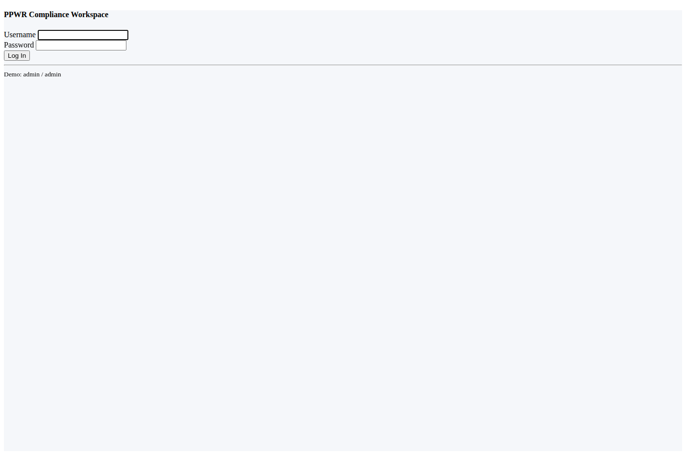
Het inlogscherm van de PPWR Compliance Workspace
Demo accounts
| Gebruiker | Wachtwoord | Rol |
|---|
| admin | admin | Administrator |
| analyst | analyst | Gebruiker |
3. Dashboard
Na het inloggen kom je op het dashboard. Dit geeft een overzicht van de gehele verpakkingsportfolio en laat direct zien waar actie nodig is.
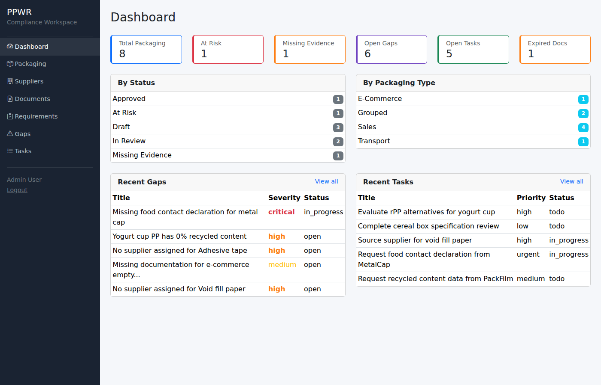
Het dashboard met KPI's, status-overzichten en recente activiteit
Wat zie je op het dashboard?
| KPI-kaart | Betekenis |
|---|
| Total Packaging | Totaal aantal verpakkingsitems in het systeem |
| At Risk | Verpakkingen met kritieke gaps of ontbrekende compliance |
| Missing Evidence | Verpakkingen waarvoor bewijsstukken ontbreken |
| Open Gaps | Aantal openstaande tekortkomingen |
| Open Tasks | Aantal openstaande taken |
| Expired Docs | Documenten waarvan de geldigheid is verlopen |
Daaronder vind je:
- By Status: Verdeling van verpakkingen per compliance status
- By Packaging Type: Verdeling per verpakkingstype (sales, grouped, transport, e-commerce)
- Recent Gaps: De 5 meest recente tekortkomingen
- Recent Tasks: De 5 meest recente taken
4. Packaging Register
Het Packaging Register is het hart van de applicatie. Hier beheer je alle verpakkingsitems.
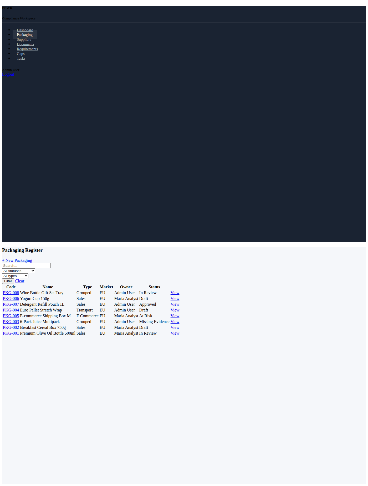
Overzicht van alle verpakkingsitems met filters en zoekfunctie
Functionaliteiten
- Zoeken: Zoek op naam of code via het zoekveld
- Filteren: Filter op status (Draft, Approved, At Risk, etc.) en/of verpakkingstype
- Nieuw item: Klik op "+ New Packaging" om een nieuw verpakkingsitem aan te maken
Een nieuw verpakkingsitem aanmaken
- Klik op "+ New Packaging"
- Vul de verplichte velden in:
- Code: Unieke code (bijv. PKG-009)
- Naam: Beschrijvende naam
- Type: Sales, Grouped, Transport, of E-commerce
- Vul optioneel in: SKU/productfamilie, markt, eigenaar, notities
- Klik op "Create"
Verpakkingsstatussen
| Status | Betekenis |
|---|
| Draft | Nieuw item, nog niet beoordeeld |
| In Review | Wordt momenteel beoordeeld |
| Missing Evidence | Bewijsstukken ontbreken |
| At Risk | Kritieke tekortkomingen gevonden |
| Approved | Alle requirements voldaan |
| Archived | Niet meer actief |
5. Packaging Detail
Klik op een verpakkingscode om de detailpagina te openen. Dit is de centrale plek waar je alles over een verpakkingsitem ziet en beheert.
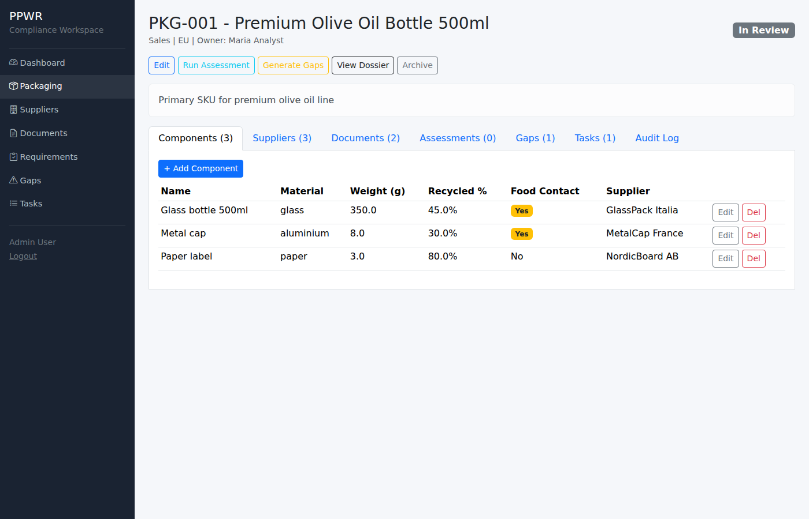
Detailpagina van een verpakkingsitem met alle gekoppelde informatie
Tabs / Secties
| Tab | Inhoud |
|---|
| Components | Onderdelen waaruit de verpakking bestaat (materiaal, gewicht, recycled content, food-contact, leverancier) |
| Suppliers | Leveranciers die gekoppeld zijn via de componenten |
| Documents | Documenten en bewijsstukken gekoppeld aan dit item |
| Assessments | Resultaten van de PPWR-beoordeling (welke requirements van toepassing zijn) |
| Gaps | Openstaande tekortkomingen |
| Tasks | Taken gerelateerd aan dit item |
| Audit Log | Geschiedenis van wijzigingen |
Acties op de detailpagina
- Edit: Basisgegevens van het item wijzigen
- Run Assessment: Automatisch beoordelen welke PPWR-requirements van toepassing zijn en of het bewijs compleet is
- Generate Gaps: Automatisch tekortkomingen detecteren (ontbrekende data, documenten, leveranciers)
- View Dossier: Compleet compliance-dossier bekijken en exporteren
- Archive: Item archiveren als het niet meer actief is
- + Add Component: Een nieuw component toevoegen
- + Upload Document: Een document koppelen
Componenten beheren
Elk verpakkingsitem bestaat uit een of meer componenten. Per component leg je vast:
- Naam: Bijv. "Glazen fles 500ml", "Metalen dop", "Papieren label"
- Materiaal: Glas, plastic, karton, aluminium, papier, etc.
- Gewicht (gram): Gewicht van het component
- Recycled content %: Percentage gerecycled materiaal
- Food contact: Heeft dit component contact met voedsel?
- Leverancier: Welke leverancier levert dit component?
Tip: Voeg altijd een leverancier toe aan elk component. Dit is belangrijk voor het traceren van ontbrekende documenten en declaraties.
6. Leveranciers
Beheer hier alle leveranciers van verpakkingscomponenten.
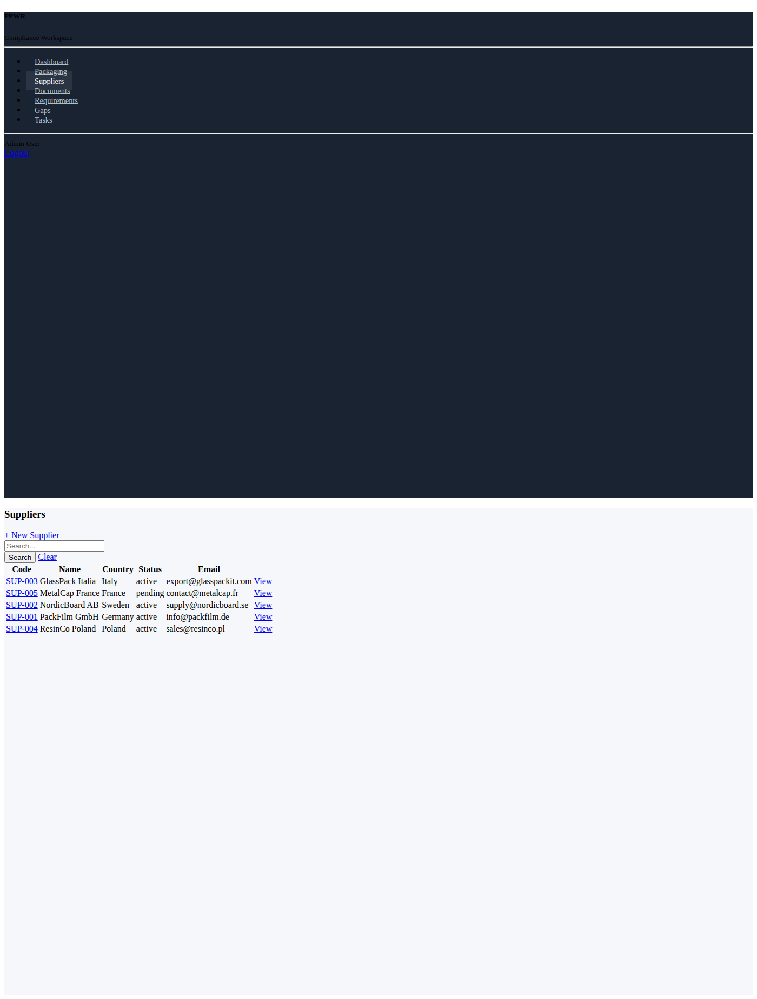
Overzicht van alle leveranciers
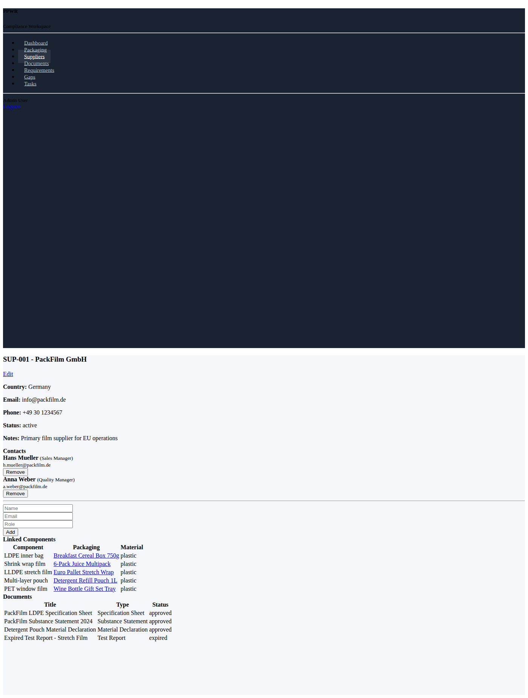
Detailpagina van een leverancier met contacten, componenten en documenten
Wat kun je doen?
- Leverancier aanmaken/bewerken: Naam, code, land, e-mail, telefoon, status
- Contactpersonen toevoegen: Per leverancier meerdere contacten met naam, e-mail, rol en telefoon
- Overzicht bekijken: Welke componenten levert deze leverancier? Welke documenten zijn er?
Leverancier-statussen
| Status | Betekenis |
|---|
| Active | Gekwalificeerde, actieve leverancier |
| Pending | In afwachting van kwalificatie |
| Inactive | Niet meer actief |
| Blocked | Geblokkeerd |
7. Documenten
Beheer alle documenten en bewijsstukken die nodig zijn voor PPWR-compliance.
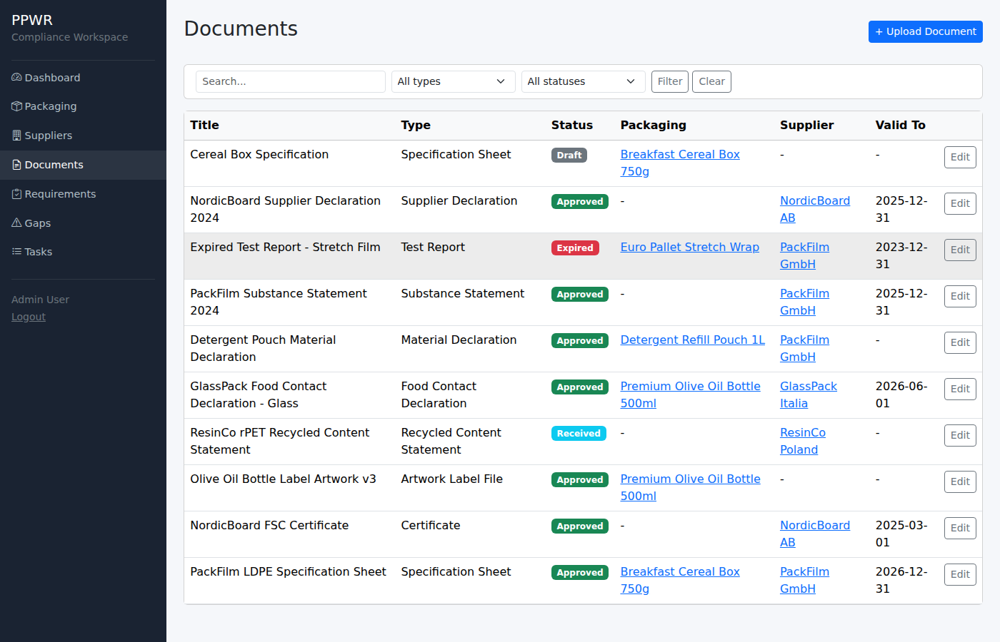
Overzicht van alle documenten met type, status en geldigheid
Een document uploaden
- Klik op "+ Upload Document"
- Vul de titel in en kies het documenttype
- Koppel het document aan een verpakkingsitem, leverancier en/of component
- Upload het bestand (optioneel)
- Stel de geldigheidsperiode in (valid from / valid to)
- Klik op "Upload"
Documenttypes
| Type | Wanneer nodig? |
|---|
| Specification Sheet | Technische specificaties van de verpakking |
| Material Declaration | Verklaring over gebruikte materialen |
| Food Contact Declaration | Bij food-contact componenten (EU Reg. 1935/2004) |
| Recycled Content Statement | Bewijs van percentage gerecycled materiaal |
| Certificate | Certificeringen (bijv. FSC, ISO) |
| Test Report | Testresultaten en analyses |
| Substance Statement | Verklaring over stoffen (SVHC, PFAS) |
| Supplier Declaration | Algemene leveranciersverklaring |
| Artwork / Label File | Artwork en labelbestanden |
Documentstatussen
| Status | Betekenis |
|---|
| Draft | Concept, nog niet definitief |
| Received | Ontvangen, nog niet goedgekeurd |
| Approved | Goedgekeurd en geldig |
| Expired | Geldigheid verlopen, moet vernieuwd worden |
Let op: Verlopen documenten worden geteld op het dashboard. Zorg dat je documenten tijdig vernieuwt.
8. PPWR Requirements
De requirements-bibliotheek bevat alle PPWR-verplichtingen die relevant zijn. Het systeem gebruikt deze om automatisch te bepalen welke verplichtingen op welke verpakking van toepassing zijn.
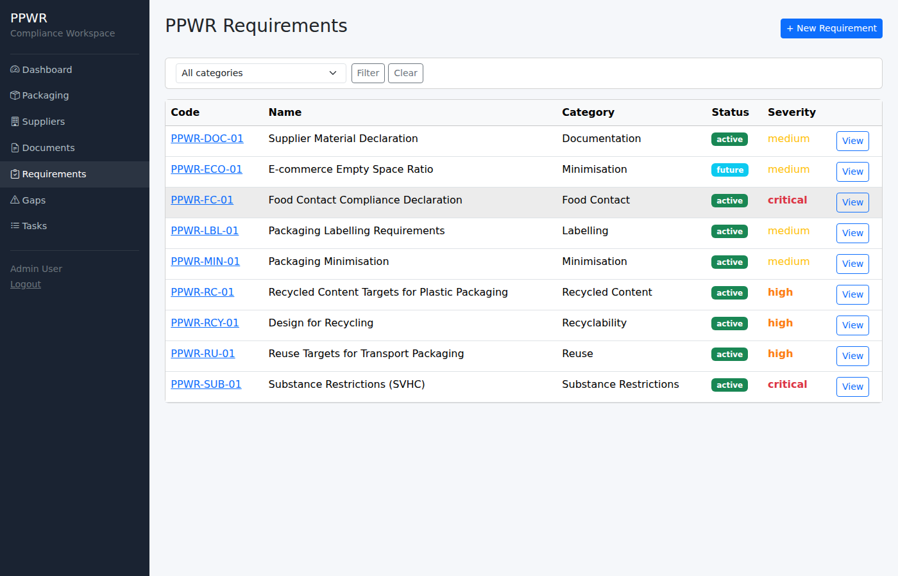
Overzicht van alle PPWR-requirements met categorie en ernst
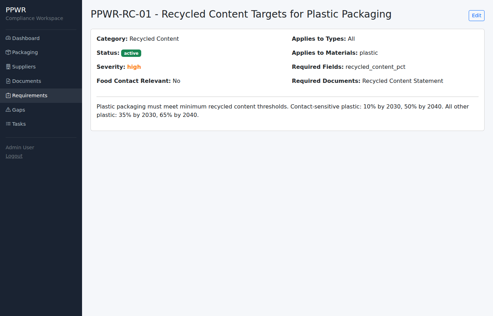
Detail van een requirement met toepasselijkheid en vereiste documenten
Hoe werkt de toepasselijkheid?
Elke requirement definieert wanneer hij van toepassing is:
- Verpakkingstype: Bijv. alleen transport-verpakkingen of alleen e-commerce
- Materiaal: Bijv. alleen plastic componenten
- Food contact: Alleen als er food-contact componenten zijn
Wanneer je "Run Assessment" uitvoert op een verpakkingsitem, controleert het systeem automatisch:
- Welke requirements zijn van toepassing op basis van type, materialen en food-contact?
- Zijn de vereiste documenttypes aanwezig?
- Zijn de vereiste datavelden ingevuld (bijv. recycled content percentage)?
- Status wordt bepaald: Compliant, Partial, of Missing
Categorieeen
| Categorie | Voorbeeld |
|---|
| Recycled Content | Minimale recycled content percentages voor plastic |
| Recyclability | Design for recycling verplichtingen |
| Minimisation | Minimalisering van gewicht en volume |
| Reuse | Hergebruikdoelen voor transport-verpakkingen |
| Food Contact | Food contact declarations |
| Labelling | Etiketteringsverplichtingen |
| Substance Restrictions | SVHC en PFAS beperkingen |
| Documentation | Leveranciersdeclaraties |
9. Gaps (Tekortkomingen)
Gaps zijn geidentificeerde tekortkomingen: ontbrekende data, documenten of leveranciersinformatie.
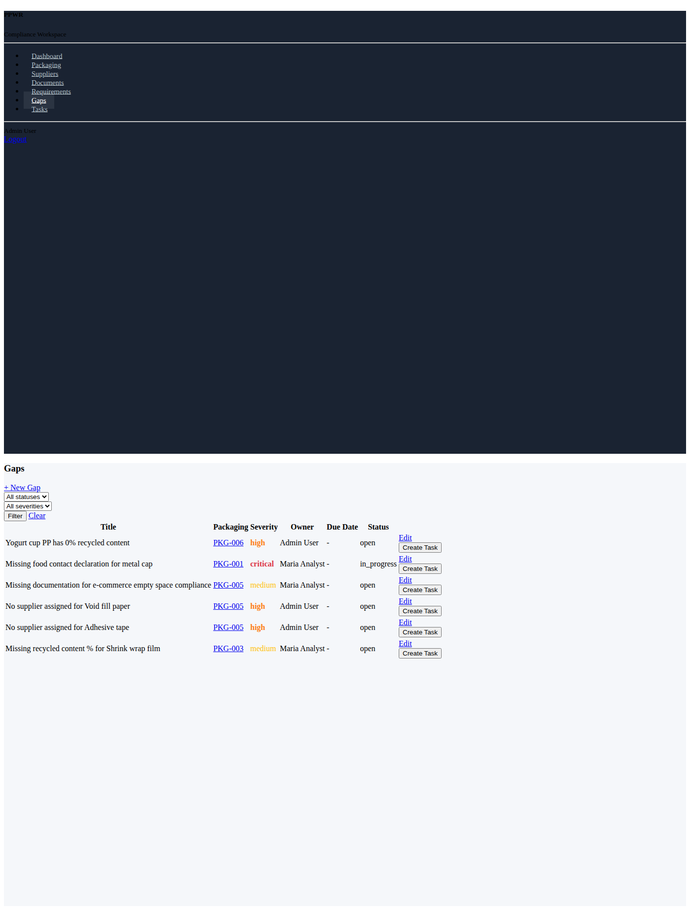
Overzicht van alle openstaande gaps met ernst, eigenaar en status
Hoe ontstaan gaps?
- Automatisch: Klik op "Generate Gaps" bij een verpakkingsitem. Het systeem detecteert:
- Componenten zonder leverancier
- Ontbrekend gewicht of recycled content percentage
- Ontbrekende documenten die door requirements vereist worden
- Handmatig: Maak zelf een gap aan via "+ New Gap"
Ernst-niveaus
| Ernst | Betekenis |
|---|
| Critical | Moet onmiddellijk opgelost worden (bijv. ontbrekende food contact declaration) |
| High | Hoge prioriteit, snel actie vereist |
| Medium | Moet opgelost worden voor compliance |
| Low | Wenselijk maar niet urgent |
Van gap naar taak
Klik op "Create Task" bij een gap om er automatisch een taak van te maken die je kunt toewijzen aan een collega.
10. Taken
Taken zijn concrete acties die uitgevoerd moeten worden, vaak voortkomend uit gaps.
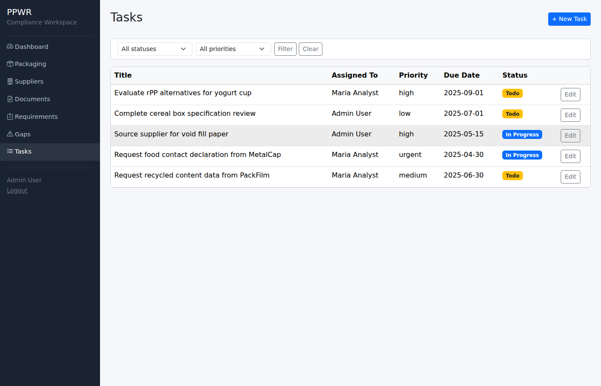
Overzicht van alle taken met toewijzing, prioriteit en deadline
Een taak aanmaken
- Klik op "+ New Task" (of maak een taak vanuit een gap)
- Vul de titel en beschrijving in
- Wijs de taak toe aan iemand (Assigned To)
- Stel een deadline in
- Kies de prioriteit: Low, Medium, High, of Urgent
- Koppel optioneel aan een verpakkingsitem of leverancier
Taakstatussen
| Status | Betekenis |
|---|
| Todo | Nog niet gestart |
| In Progress | Mee bezig |
| Done | Afgerond |
| Cancelled | Geannuleerd |
11. Packaging Dossier
Het dossier is een compleet overzicht van alle compliance-informatie voor een verpakkingsitem. Dit kun je gebruiken voor interne audits of om aan te tonen dat je voldoet aan de PPWR.
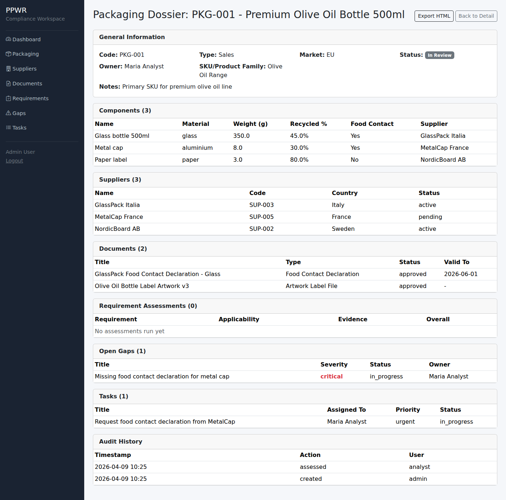
Compleet compliance-dossier met alle gekoppelde informatie
Wat staat in het dossier?
- Algemene verpakkingsinformatie (code, naam, type, markt, eigenaar)
- Componentenlijst met materialen, gewicht, recycled content en leveranciers
- Overzicht van alle gekoppelde leveranciers
- Lijst van alle documenten en bewijsstukken
- Assessment-resultaten: welke requirements van toepassing zijn en of er aan voldaan wordt
- Openstaande gaps
- Openstaande taken
- Audit trail
Exporteren
Klik op "Export HTML (Back to Email)" om het dossier te downloaden als HTML-bestand. Dit kun je opslaan, printen of per e-mail delen.
Tip: Exporteer regelmatig een dossier van je belangrijkste verpakkingen als bewijs van je compliance-inspanningen.
12. Standaard Werkwijze
Volg deze stappen voor elk nieuw verpakkingsitem:
- Registreer het verpakkingsitem in het Packaging Register met de juiste code, naam en type
- Voeg componenten toe met materiaal, gewicht, recycled content percentage en food-contact informatie
- Koppel leveranciers aan elk component
- Upload relevante documenten (specificaties, declaraties, certificaten)
- Voer een assessment uit via "Run Assessment" om te zien welke PPWR-requirements van toepassing zijn
- Genereer gaps via "Generate Gaps" om te ontdekken wat er nog ontbreekt
- Maak taken aan vanuit de gaps en wijs ze toe aan de juiste personen
- Los gaps op door ontbrekende data in te vullen en documenten te uploaden
- Herhaal het assessment totdat alle requirements voldaan zijn
- Exporteer het dossier als bewijs van compliance
Belangrijk: De PPWR-deadlines naderen. Begin met je meest kritieke verpakkingen (food-contact, plastic, hoge volumes) en werk van daaruit verder.